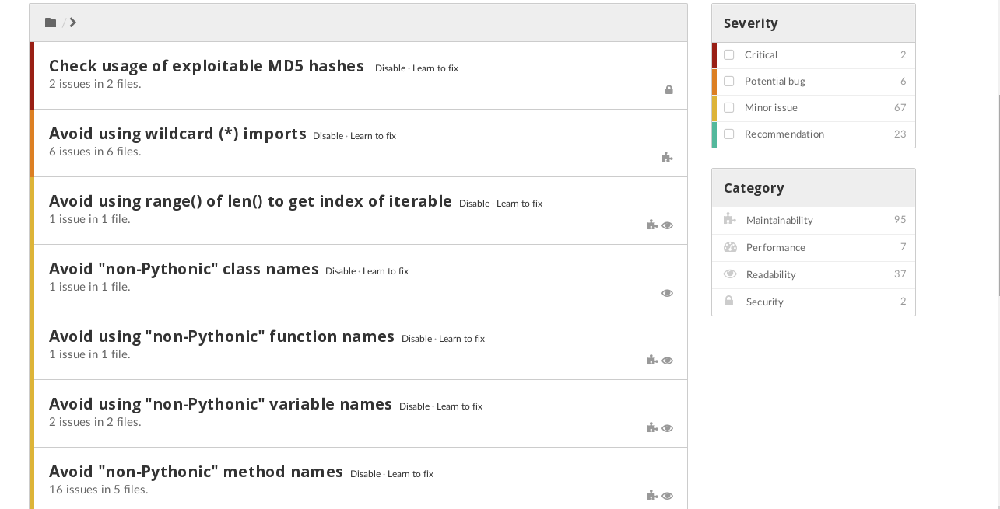

Luego de un tiempo escribiendo artículos de temas muy diversos sobre python, ahora iniciaré una serie sobre programación orientada a objetos desde lo básico hasta las nuevas características incorporadas en el lenguaje.
Esto me ayudará también a mí a corregir unas prácticas en cuanto a la programación orientada a objetos y aprender nuevas prácticas.
Actualmente estoy usando una herramienta de una página web que permite evaluar la calidad de un código, este sitio se llama www.quantifiedcode.com.
Me he encontrado con errores en un desarrollo que por eso inicio esta serie de artículos.
En la siguiente figura verán como muestra los errores la herramienta:

Lo bueno es que al hacer un commit a github automáticamente quantifiedcode envía un correo con las incidencias.
Bueno, ahora toca ir al artículo en sí.
Se tiene una clase ciudad con varios métodos.
A continuación se muestra el código:
#!/usr/bin/env python3
from math import *
#Se crea la clase ciudad que hereda de object.
#Esto se declara asi actualmente por convencion.
class Ciudad(object):
#Datos
cont_ciudad = 0
id_ciudad = 0
def __init__(self,nombre='',x=0,y=0):
"""Constructor que recibe el nombre de la ciudad,x y y"""
self.nombre = nombre
self.x = x
self.y = y
Ciudad.cont_ciudad += 1
self.id_ciudad = Ciudad.cont_ciudad
def __str__(self):
"""Metodo que retorna un string con la info de la ciudad"""
return 'Ciudad: ' + self.nombre + ',id= ' + str(self.id_ciudad) + ',x= %s,y=%s' %(self.x,self.y)
def __set__( self, nombre):
"""Metodo que asigna un valor"""
self.nombre= nombre
def __get__( self):
"""Metodo que obtiene un valor"""
return self.nombre
def mover_a(self,x=0,y=0):
"""Metodo que cambia de valor a x y y"""
self.x += x
self.y += y
def distancia(self, otra_ciudad):
"""Metodo que calcula la distancia con respecto a otra ciudad"""
xi = pow(otra_ciudad.x-self.x,2)
yi = pow(otra_ciudad.y-self.y,2)
return sqrt(xi+ yi)
def __del__(self):
"""Elimina la clase"""
#obtener el nombre de una clase
class_name = self.__class__.__name__
print('class ', class_name, 'destroyed')
#Inicializando un metodo estatico
#Es el caso que no se referencia al objeto en si mismo con
#self
@staticmethod
def info():
"""Metodo que devuelve el nombre del desarrollador"""
return "Desarrollado por Seraph"
if __name__ == "__main__":
a = Ciudad('Valencia',5,5)
b = Ciudad('Maracay',5,15)
print(a)
print(b)
print(Ciudad.cont_ciudad)
a.mover_a(4,3)
b.mover_a(7,12)
print(a.info())
print(a)
print(b)
El método info maneja un decorador llamado staticmethod que lo define como un método estático, ya que no se le pasar self para trabajar con métodos o variables del mismo objeto.
El resultado de ejecutar el script es el siguiente:
Ciudad: Valencia,id= 1,x= 5,y=5
Ciudad: Maracay,id= 2,x= 5,y=15
2
Desarrollado por Seraph
Ciudad: Valencia,id= 1,x= 9,y=8
Ciudad: Maracay,id= 2,x= 12,y=27
('class\t', 'Ciudad', 'destroyed')
('class\t', 'Ciudad', 'destroyed')
¡Haz tu donativo! Si te gustó el artículo puedes realizar un donativo con Bitcoin (BTC) usando la billetera digital de tu preferencia a la siguiente dirección: 17MtNybhdkA9GV3UNS6BTwPcuhjXoPrSzV
O Escaneando el código QR desde la billetera:

Comments !